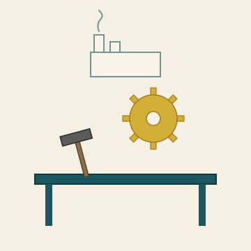

Het Open Vizier · Toekomst · Industrie
Een krant over denken zonder oogkleppen

★ TOEKOMST · INDUSTRIE
Drie vragen onder één onderwerp: hoe maakindustrie het oergevoel verloor, welke instrumenten daadwerkelijk werken, en hoe scholing en vakmanschap terug kunnen komen. Twaalf artikelen verdeeld over die drie vragen.
★ I · HOE HET ZICH HEEFT ONTWIKKELD
Hoe regels, financiering en risico-mijding het maken hebben vervangen — vijf beroepen, één diagnose.
Hoe regels, verzekeringen en financiering het echte werk verdrongen.
Wat een leidinggevende verliest als hij alleen op cijfers stuurt.
Waarom een buitenstaander binnen drie dagen weet wat insiders niet kunnen zien.
Waarom alleen wie het niet nodig heeft krediet krijgt.
Hoe risico-mijding zelf het grootste risico werd.
Inspectie zonder oergevoel is administratie van het verleden.
★ II · HOE DE EVOLUTIE ZOU GAAN
Welke instrumenten al bestaan en werken — Ishikawa, stromingsleer, oergevoel in de praktijk.
Stromingsleer als universele taal: van scheepscoatings tot economie. Een pleidooi voor vakoverschrijdend denken.
Kaoru Ishikawa's zeven kwaliteitsinstrumenten plus orde-analyse uit de staalbouw — het gereedschap waarmee Japan ons inhaalde.
Japan, Korea en China zijn ons ingehaald omdat ze het instrument omarmden dat wij hebben weggegooid.
Verkoper, baas, consultant en bankier — vier beroepen, één instrument.
★ III · HOE HET ZOU MOETEN GAAN
Concrete invulling — werkbank, denkraam, eis aan de lezer.
★ Bronnen-edities
De artikelen hieronder zijn afkomstig uit Editie 1 (Samenhang), Editie 2 (Belastingbeleid), Editie 3 (Onder het ijs), Editie 4 (Papier-macht) en Editie 5 (Vergeten orde), waar zij in hun oorspronkelijke context staan.
★ Terug naar